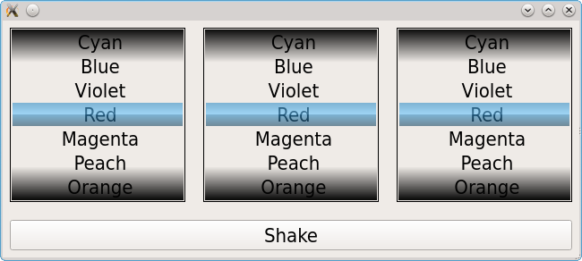

Wheel Scroller Example
The Wheel Scroller Example shows how to use QScroller, QScrollEvent and QScrollPrepareEvent to implement smooth scrolling for a custom Widget.

Basics
The QScroller class is the main part of the smooth scrolling mechanism in Qt. It keeps track of the current scroll position and speed and updates the object through events. QScroller will get touch events via the QFlickGesture. It will query the target object through a QScrollPrepareEvent for the scroll area and other information. QScroller will send QScrollEvents to inform the target object about the current scroll position. The target object (usually a QWidget or a QGraphicsObject) will then need to update it's graphical representation to reflect the new scroll position.
The Wheel Widget class
To demonstrate how to use the QScroller we implement a QWidget that looks and works like the wheel of a slot machine. The wheel can be started via touch events and will continue getting slower. Additionally the wheel should appear as if no border exists (which would seem unnatural) and the scrolling should snap to center one item.
In the widget we need to grab the QFlickGesture. The gesture itself will setAcceptTouchEvents for us, so we don't need to do that here.
QScroller::grabGesture(this, touch ? QScroller::TouchGesture : QScroller::LeftMouseButtonGesture);
The widget will get gesture events but in addition we also will get the events from QScroller. We will need to accept the QScrollPrepareEvent to indicate that a scrolling should really be started from the given position.
case QEvent::ScrollPrepare:
{
// We set the snap positions as late as possible so that we are sure
// we get the correct itemHeight
QScroller *scroller = QScroller::scroller(this);
scroller->setSnapPositionsY( WHEEL_SCROLL_OFFSET, itemHeight() );
QScrollPrepareEvent *se = static_cast<QScrollPrepareEvent *>(e);
se->setViewportSize(QSizeF(size()));
// we claim a huge scrolling area and a huge content position and
// hope that the user doesn't notice that the scroll area is restricted
se->setContentPosRange(QRectF(0.0, 0.0, 0.0, WHEEL_SCROLL_OFFSET * 2));
se->setContentPos(QPointF(0.0, WHEEL_SCROLL_OFFSET + m_currentItem * itemHeight() + m_itemOffset));
se->accept();
return true;
}
We should call all three set functions form QScrollPrepareEvent.
setViewportSizeto indicate our viewport size. Actually the given code could be improved by giving our size minus the borders.setMaxContentPosto indicate the maximum values for the scroll position. The minimum values are implicitely set to 0. In our example we give a very high number here and hope that the user is not patient enough to scroll until the very end.setContentPosto indicate the current scroll position. We give a position in the middle of the huge scroll area. Actually we give this position every time a new scroll is started so the user will only reach the end if he continuously scrolls in one direction which is not very likely.
The handling of the QScrollEvent is a lengthly code not fully shown here.
case QEvent::Scroll:
{
QScrollEvent *se = static_cast<QScrollEvent *>(e);
qreal y = se->contentPos().y();
int iy = y - WHEEL_SCROLL_OFFSET;
int ih = itemHeight();
In principle it does three steps.
- It calculates and updates the current scroll position as given by QScroller.
- It repaints the widget so that the new position is shown.
- It centers the item as soon as the scrolling stopps.
The following code does the centering.
// -- calculate the current item position and offset and redraw the widget
int ic = itemCount();
if (ic>0) {
m_currentItem = iy / ih % ic;
m_itemOffset = iy % ih;
// take care when scrolling backwards. Modulo returns negative numbers
if (m_itemOffset < 0) {
m_itemOffset += ih;
m_currentItem--;
}
if (m_currentItem < 0)
m_currentItem += ic;
}
// -- repaint
update();
se->accept();
return true;
We check if the scrolling is finished which is indicated in the QScrollEvent by the isLast flag. We then check if the item is not already centered and if not start a new scroll by calling QScroller::scrollTo.
As you can see the QScroller can be used for other things besides simple scroll areas.
Files: